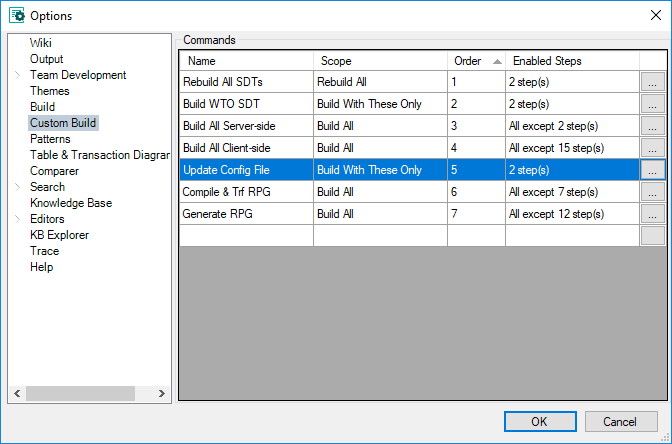
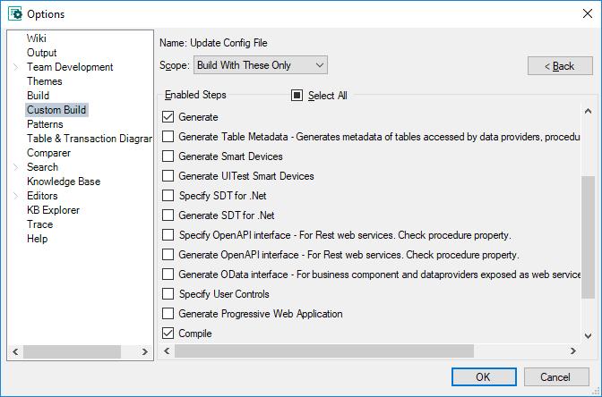

In this node (GeneXus Menu > Tools > Options > Build > Custom Build), you can create custom Build commands.
A custom build command does only the steps you configure. By avoiding steps that are not necessary in certain circumstances, you optimize build times and get faster prototyping cycles.
Each custom build command has three fields
Once defined, a custom build command appears in the contextual menu of the object > Custom Build, or on the main GeneXus menu > Build > Custom Build.
These samples are custom build commands that different users have defined, and found useful under certain circumstances.
1) Update Configuration file
After changing a Datastore property (password, user, etc) the only step GeneXus requires to do is to update the configuration file (eg web.config, client.cfg, etc); but any of the available standard commands do too many steps.
So you can create a new custom action
2) Build SDTs (only valid for .NET)
In some particular case, some SDT hasn't been rebuilt properly and that produces compilation errors on objects that use that SDT. A rebuild all may take too long because it does unnecessary steps
So you can create a new custom action
3) Separate Generate from Compile and Transfer (RPG/400)
If you need to change something before compiling and transferring to the iSeries, you can create two custom build commands
a)
b)


| Backlinks |
| Category:IDE Configuration Options |
| MSBuild Tasks |